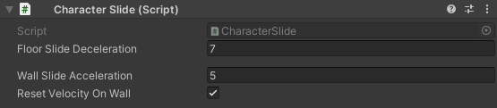

CharacterSlide
SWITCH TO SCRIPTINGOverview
The CharacterSlide script provides functionality for character sliding behaviour in a Unity project. It allows
characters to slide on floors and walls, offering customizable parameters to control the sliding mechanics.
To utilize the component in your Unity project, proceed by attaching the script to the root object of your character in the Unity Editor,
and then configure the parameters exposed in the Inspector to customize the sliding behaviour as per your requirements.
Note that the CharacterSlide requires a Rigidbody2D
component for proper operation. Attaching the script to your character object will automatically add this required component.
Inspector
| FloorSlideDeceleration |
How fast should the character's speed decrease when floor sliding?
Once the character starts slinding, their speed will be decreased based on the specified value. |
| WallSlideAcceleration |
Exponential acceleration when the character is wall sliding.
When colliding with a wall, the character's speed along the Y-axis will reset to 0. Subsequently, the character will commence accelerating downwards based on the specified value. |